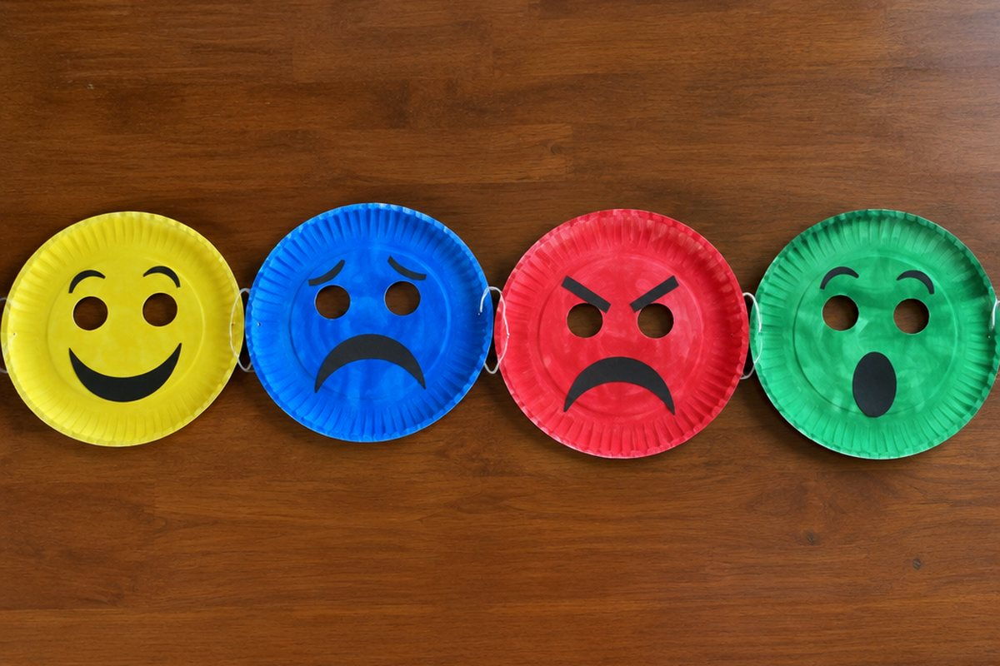

전체 단원 › 4학년 1학기 › 영어 › 감정 말하기
내 기분을 영어로 어떻게 말할까?

시험을 잘 봐서 기쁠 때도, 친구와 다퉈서 속상할 때도 있죠? 내 기분을 영어로 말해 봐요.
기분을 나타내는 말
기쁘면 happy, 슬프면 sad, 화가 나면 angry, 피곤하면 tired예요.
배가 고프면 hungry, 졸리면 sleepy라고 해요. 기분이나 몸 상태를 나타내는 말이에요.
happy(기쁜), sad(슬픈), angry(화난), tired(피곤한)
I'm + 기분 으로 말해요
내 기분을 말할 때는 "I'm happy.(나는 기뻐.)"처럼 I'm 뒤에 기분을 나타내는 말을 붙여요. I'm은 I am을 줄인 말이에요.
기분을 더 크게 말하고 싶으면 very를 넣어요. "I'm very happy.(나는 정말 기뻐.)"
I'm sad. / I'm very hungry.
친구의 기분 묻기
친구의 기분이 궁금하면 "Are you happy?(너 기분 좋아?)"라고 물을 수 있어요.
맞으면 "Yes, I am.", 아니면 "No, I'm not."이라고 대답해요. 슬퍼 보이는 친구에게는 "What's wrong?(무슨 일 있어?)"이라고 물어봐 줘요.
Are you tired? - Yes, I am. / No, I'm not.
핵심 낱말
- happy
- 기쁜, 행복한
- sad
- 슬픈
- angry
- 화난
- tired
- 피곤한
- hungry
- 배고픈
꼭 알아야 할 표현
| I'm happy. | 나는 기뻐. | |
| I'm sad. | 나는 슬퍼. | |
| I'm hungry. | 나는 배고파. | |
| Are you tired? | 너 피곤하니? | 친구의 기분이나 상태를 물을 때 |
| Yes, I am. | 응, 그래. | |
| No, I'm not. | 아니, 그렇지 않아. | |
| What's wrong? | 무슨 일 있어? | 속상해 보이는 친구에게 |
한 줄 정리
- 기분이나 몸 상태를 나타내는 말에는 happy, sad, angry, tired, hungry 등이 있어요.
- 내 기분은 I'm + 기분으로 말해요.
- 친구에게는 Are you ~?로 묻고 Yes, I am. / No, I'm not.으로 대답해요.
학교 교육과정 연결
- [4영02-07] 자신의 감정을 쉽고 간단한 문장으로 말하거나 보고 쓴다.
- [4영02-08] 자기 주변 주제에 관한 담화의 주요 정보를 묻거나 답한다.